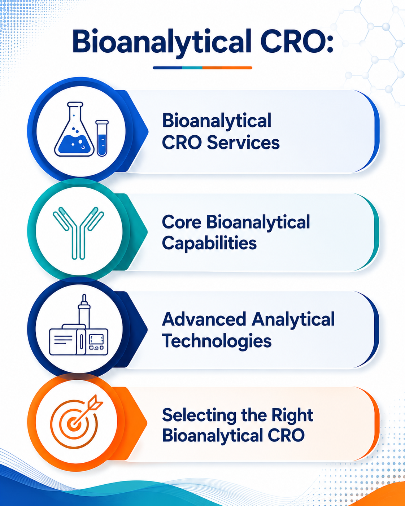

Bioanalytical CRO Services: Key Expertise, Technologies & Trends
12 August 2026

The pharmaceutical and biotechnology industries rely on specialized bioanalysis to generate reliable data during drug discovery, nonclinical development, and clinical development. A Bioanalytical CRO can support pharmaceutical and biotechnology companies with method development, method validation, biological sample analysis, pharmacokinetic (PK) and toxicokinetic (TK) studies, biomarker analysis, and other specialized testing activities.
Bioanalytical CRO Services can be used to quantify drugs, metabolites, biomarkers, and other relevant analytes in biological matrices such as plasma, serum, whole blood, urine, cerebrospinal fluid, and tissue. The data generated through these activities can support the assessment of drug exposure, pharmacokinetics, pharmacodynamics, bioavailability, bioequivalence, safety, and efficacy.
Selecting an appropriate CRO for bioanalytical testing therefore requires consideration of both scientific capabilities and operational expertise. Experience with the relevant molecule type, analytical technology, biological matrix, regulatory requirements, and study objectives can be important when evaluating potential providers.
Bioanalytical CRO Services
Bioanalytical CRO Services can support multiple activities across pharmaceutical and biotechnology development programs. The specific analytical strategy generally depends on the drug modality, target analyte, biological matrix, expected concentration range, study type, and purpose of the analysis.
A Bioanalytical CRO may provide services including bioanalytical method development and validation, study sample analysis, pharmacokinetic and toxicokinetic analysis, metabolite analysis, biomarker testing, ligand-binding assays, immunogenicity testing, and bioanalysis supporting bioavailability and bioequivalence studies.
Common technologies used as part of Bioanalytical Services include LC-MS/MS, high-resolution mass spectrometry, HPLC, ELISA, electrochemiluminescence-based assays, and other immunoassay or mass spectrometry platforms.
Key Areas of Bioanalytical CRO Expertise
Bioanalytical Method Development and Validation
Bioanalytical method development involves establishing an analytical procedure suitable for detecting, identifying, or quantifying a target analyte in a biological matrix.
A CRO for Bioanalytical Testing may develop methods using chromatographic techniques such as LC-MS/MS or ligand-binding assay platforms, depending on the nature of the analyte and the intended application.
Pharmacokinetic and Toxicokinetic Bioanalysis
Pharmacokinetic bioanalysis is an important component of drug development because it provides quantitative information about drug concentrations in biological samples over time.
Bioanalytical Services can support PK studies by measuring drug and, where relevant, metabolite concentrations in samples collected at predefined time points.
Bioavailability and Bioequivalence Analysis
Bioavailability and bioequivalence studies require reliable measurement of drug concentrations in biological samples collected according to the study protocol.
A CRO for Bioanalytical Testing can support these studies through development, validation, and application of quantitative bioanalytical methods, frequently using LC-MS/MS for small-molecule drugs.
Ligand-Binding Assays
Ligand-binding assays are particularly relevant to the bioanalysis of biologics and other large-molecule therapeutics.
Depending on the molecule and intended application, platforms such as ELISA and electrochemiluminescence assays may be used by Bioanalytical CROs to quantify therapeutic proteins, antibodies, or other biological analytes.
Biomarker Analysis
Biomarkers can provide information about biological responses to treatment and may support pharmacodynamic assessments, target engagement, disease characterization, patient stratification, or other development objectives.
A Bioanalytical CRO may provide biomarker testing using appropriate analytical platforms based on the biomarker type, biological matrix, expected concentration range, and intended use.
Metabolite and Biotransformation Analysis
Drug metabolism studies can provide information about the formation, distribution, and elimination of metabolites.
A CRO for Bioanalytical Testing may support metabolite investigations through quantitative and qualitative analysis using LC-MS/MS, high-resolution mass spectrometry, and other complementary techniques.
Sample Analysis and Bioanalytical Data Generation
Following method development and validation, bioanalytical laboratories may perform analysis of study samples according to predefined procedures and applicable quality requirements.
A Bioanalytical CRO may manage activities including sample receipt, storage, preparation, analysis, data processing, quality review, and reporting.
Technologies Used in Bioanalytical Testing
Modern bioanalysis relies on a combination of analytical and biological technologies. LC-MS/MS is one of the most widely used platforms for quantitative bioanalysis of small molecules because of its sensitivity and selectivity. High-resolution mass spectrometry can provide additional capabilities for qualitative analysis, metabolite identification, and structural characterization.
Ligand-binding assay technologies, including ELISA and electrochemiluminescence platforms, can be used for many biologic molecules, proteins, peptides, and biomarkers.
The choice of technology should be based on the analyte, biological matrix, required sensitivity, study objective, and intended use of the data rather than on the technology alone.
Factors to Consider When Selecting a Bioanalytical CRO
Selecting a suitable CRO for Bioanalytical Testing involves evaluating both technical capabilities and operational infrastructure. Sponsors may consider the CRO's experience with the relevant drug modality, biological matrices, analytical platforms, method development capabilities, and applicable regulatory requirements.
Experience with specific applications such as PK/TK analysis, BA/BE studies, biomarkers, biologics, ligand-binding assays, metabolite analysis, or immunogenicity testing may also be relevant.
Other factors can include laboratory capacity, sample throughput, turnaround times, sample management procedures, quality systems, data integrity controls, documentation practices, and the ability to support programs across different stages of development.
Trends Influencing Bioanalytical CRO Services
The increasing complexity of therapeutic modalities, including small molecules, peptides, proteins, monoclonal antibodies, antibody-drug conjugates, and oligonucleotides, is driving demand for specialized Bioanalytical CRO Services.
Advances in LC-MS/MS, high-resolution mass spectrometry, biomarker analysis, ligand-binding assays, immunogenicity testing, automation, and digital laboratory systems are expanding the capabilities of a Bioanalytical CRO, while a CRO for Bioanalytical Testing can provide specialized expertise across complex molecules, biological matrices, and assay formats.
These developments are also broadening the scope of Bioanalytical Services across drug development, from translational research and biomarker assessment to efficient sample processing, data management, and traceability.
Strengthening Digital Visibility with Pharma Content Solutions
Pharma Content Solutions helps Bioanalytical CROs strengthen their digital visibility by developing SEO-optimized, service-focused content for their websites that communicates their bioanalytical capabilities, technologies, therapeutic expertise, and technical services.
Through SEO content, dedicated service pages, technical articles, application-focused content, and digital marketing solutions, Pharma Content Solutions helps bioanalytical providers communicate their capabilities to pharmaceutical and biotechnology companies searching for qualified testing and development partners.